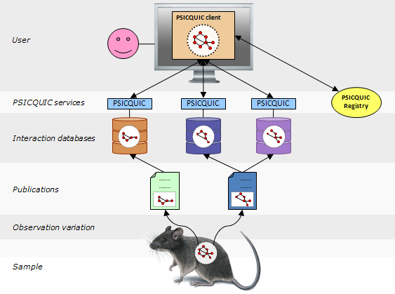

Introduction
PSICQUIC is an effort from the HUPO Proteomics Standard Initiative (HUPO-PSI) to standardise the access to molecular interaction databases programmatically.

Basically, PSICQUIC specifies:
- A standard web service with a well-defined list of methods.
- A common query language (MIQL)
This page lists the main features of the different versions of the specification.
Version 1.0
Detailed documents about the version 1.0 of the specification are available here for SOAP and here for REST.
This is the first version of the service and contains the following methods:
- getByQuery
- getByInteractor
- getByInteractorList
- getByInteraction
- getByInteractionList
- getByQuery
And these metadata methods:
- getSupportedReturnTypes
- getSupportedDbAcs
- getVersion
Version 1.1
Detailed documents about the version 1.1 of the specification are available here for SOAP and here for REST.
The basic change since version 1.0 is the addition of two new metadata methods:
- getProperty
- getProperties
Version 1.2
Detailed documents about the version 1.2 of the specification are available here for SOAP and here for REST.
The basic change since version 1.1 is the addition of two new metadata methods:
- Data can be retrieved in a compressed form to save bandwidth.
- HTTP headers X-PSICQUIC-
*are not part of the response. - XGMML format available.
- RDF, Biopax formats available
Version 1.3
Detailed documents about the version 1.3 of the specification are available here for SOAP and here for REST.
The most important changes since version 1.2 is the support of MITAB 2.6 and MITAB 2.7 formats. It is fully supporting all the fields of MIQL 2.7 and is based on a solr index.
- XGMML format available without any limitation in number of interactions to be exported
- Bug fix when exporting data in RDF and biopax
- Limitation of 500 interactions when exporting in XML, Biopax and RDF. PSICQUIC returns a HTTP 400 error when trying to download more than 500 interactions at once in XML. Pagination is strongly recommended.
- By default, negative interactions are excluded from the results returned by PSICQUIC. If a user wants to export both positive and negative interactions, he has to add a filter negative:(true OR false) to the query. Negative interactions cannot be exported with format tab25.